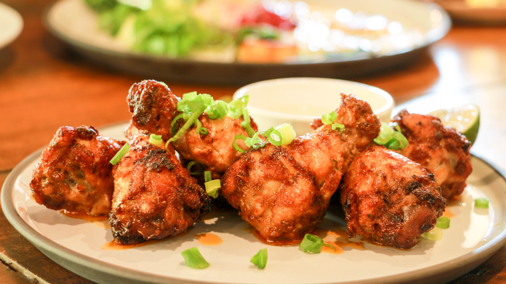
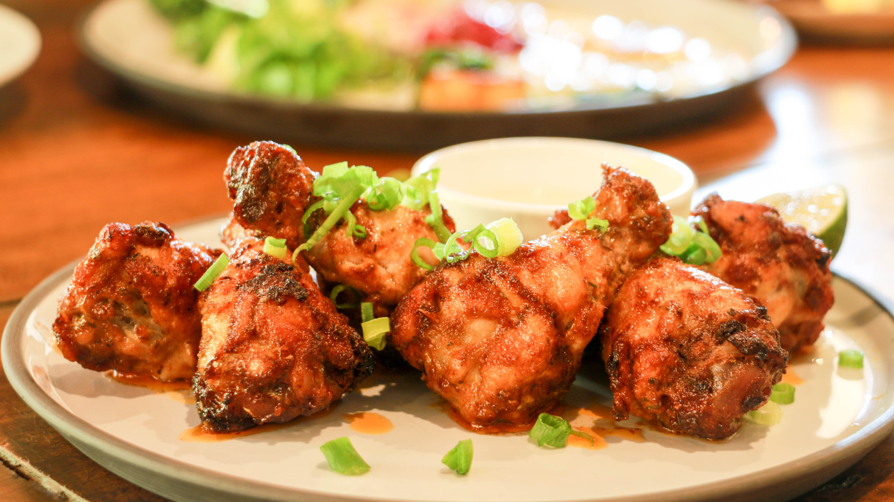
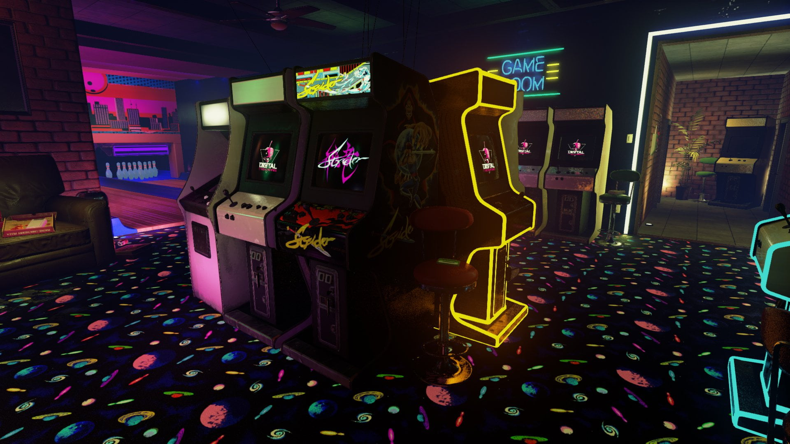
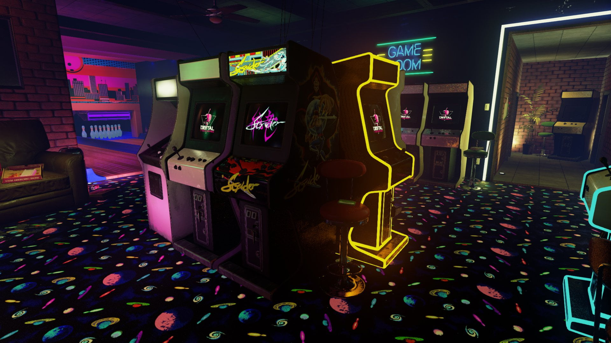
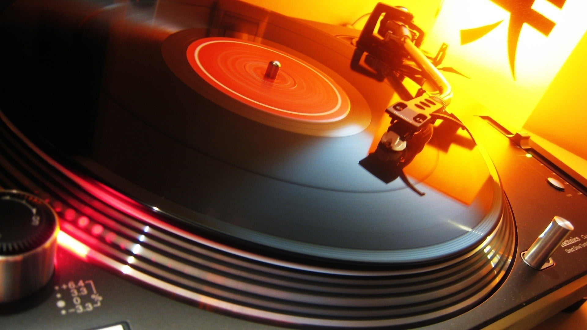
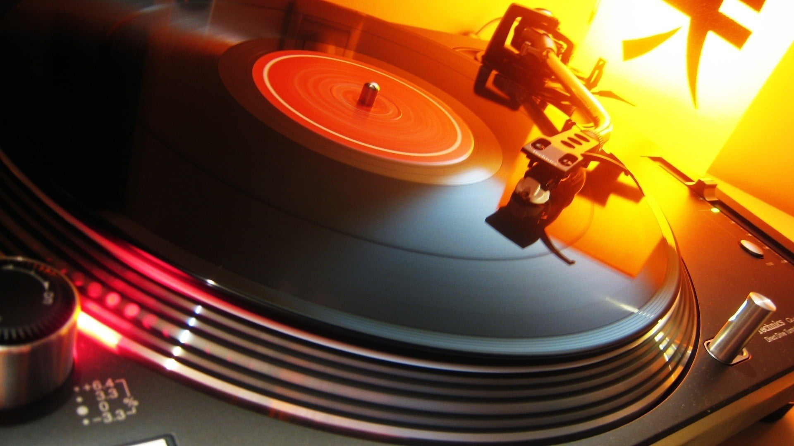

Página de Rodrigo Apaza
Página de Rodrigo Apaza
Uno de mis pasatiempos personales y un gusto
En un sentido me siento atraido por la cocina, es algo que comunmente me relaja, me alegra y puedo estar en tranquilidad, me gusta desde la cocina clásica como también con la repostería o las bebidas como el Capuccino. Es algo que practico y mejoro para un futuro y una promesa que le hice a una amiga mía, por ello busco aprender sobre técnicas de cocina, aprendo de mi primera maestra que es mi mamá, ella me dá los consejos, las enseñanzas y yo la sigo. Tambien pienso entrar en un curso de cocina o gastronomía para mejorar lo que aprenda con mi mamá pero de momento debo seguir aprendiendo.

En un sentido me siento atraido por la cocina, es algo que comunmente me relaja, me alegra y puedo estar en tranquilidad, me gusta desde la cocina clásica como también con la repostería o las bebidas como el Capuccino. Es algo que practico y mejoro para un futuro y una promesa que le hice a una amiga mía, por ello busco aprender sobre técnicas de cocina, aprendo de mi primera maestra que es mi mamá, ella me dá los consejos, las enseñanzas y yo la sigo. Tambien pienso entrar en un curso de cocina o gastronomía para mejorar lo que aprenda con mi mamá pero de momento debo seguir aprendiendo.

El vicio de muchos niños, adolecentes, jovenes y adultos, también el mío
En lo personal, desde que tengo memoria, siempre estaba cerca de alguna consola o juego, jugaba con mis hermanas y papá yo disfrutaba jugar con ellos y me divertía aún más. Tenía varios juegos favoritos y a la vez tenía juegos que me daba miedo por ser del género de terror. Con mas edad fui mejorando en los juegos y tomandolos como desafios personales y mejorar más. Buscar desafios y llenarme de adrenalina.

En lo personal, desde que tengo memoria, siempre estaba cerca de alguna consola o juego, jugaba con mis hermanas y papá yo disfrutaba jugar con ellos y me divertía aún más. Tenía varios juegos favoritos y a la vez tenía juegos que me daba miedo por ser del género de terror. Con mas edad fui mejorando en los juegos y tomandolos como desafios personales y mejorar más. Buscar desafios y llenarme de adrenalina.

Uno de mis pasatiempos favoritos por varias razones
Al ser un fanático de los juegos, esto generó un gusto por la historia de las mismas, historias de aventuras, victorias, tragedias, héroes y villanos. Todo ello me hizo buscar el transfondo del juego, su historia, sus secretos y curiosidades y ello alimentaba mi imaginación. Empecé a escribir pequeños cuentos de fantasía para un amigo y este los usaba para sus personajes y contar su pasado, luego empecé a escribir historias por capítulos, historias de fantasía medieval y de las cuales me hizo ganar a una amiga y admiradora, un punto a favor es que al escribir una historia busco palabras en el diccionario para no tener errores ortográficos. Cada vez que tengo la oportunidad, agarro mi cel y empiezo a escribir en el blog de notas, planificando cada capítulo y la trama
También escribí una historia personal para mi amiga y hermana de otro país por su cumpleaños, algo que me llena de felicidad saber que le gustó.
Al ser un fanático de los juegos, esto generó un gusto por la historia de las mismas, historias de aventuras, victorias, tragedias, héroes y villanos. Todo ello me hizo buscar el transfondo del juego, su historia, sus secretos y curiosidades y ello alimentaba mi imaginación. Empecé a escribir pequeños cuentos de fantasía para un amigo y este los usaba para sus personajes y contar su pasado, luego empecé a escribir historias por capítulos, historias de fantasía medieval y de las cuales me hizo ganar a una amiga y admiradora, un punto a favor es que al escribir una historia busco palabras en el diccionario para no tener errores ortográficos. Cada vez que tengo la oportunidad, agarro mi cel y empiezo a escribir en el blog de notas, planificando cada capítulo y la trama
También escribí una historia personal para mi amiga y hermana de otro país por su cumpleaños, algo que me llena de felicidad saber que le gustó.
Mi salida del mundo terrenal No me considero un adepto de la música o alguien que siga constantemente las tendencias y las canciones populares, una vez mi profesora nos dijo un experimento sobre la letra de cualquier música, en especial las de reggaeton: "escribe en una hoja la letra de esa canción, luego léelo todo en voz alta y verás lo que te transmite". Soy un joven que escucha la música que una vez pudieron gustarle a mis abuelos, música con un ritmo interesante y una letra bonita sin groserias, letras que reflejan buenos sentimientos, respetos y lecciones de vida. Hay canciones que son "modernas" en el tema del ritmo o de los instrumentos pero toda música que escucho tiene un proposito y es: me libera del mundo y deja fluir mi imaginación.
Como escritor, la música me dá el empujón necesario para poder liberarme de los bloqueos artisticos. Música con letra o solamente instrumental me libera y me indica que todo puede ser posible gracias a la imaginación y a la fantasía. Es un consuelo y una forma de reflejar o transmitir mis sentimientos y emociones a las demás personas.
Escuchar música me ayuda a aislarme de malos momentos y me calma en momentos de los cuales estoy tenso o ansioso, es mi refugio y mi escape, una forma de estar en paz, mi forma de expresar mis sentimientos y una forma de disfrutar la vida.

Como escritor, la música me dá el empujón necesario para poder liberarme de los bloqueos artisticos. Música con letra o solamente instrumental me libera y me indica que todo puede ser posible gracias a la imaginación y a la fantasía. Es un consuelo y una forma de reflejar o transmitir mis sentimientos y emociones a las demás personas.
Escuchar música me ayuda a aislarme de malos momentos y me calma en momentos de los cuales estoy tenso o ansioso, es mi refugio y mi escape, una forma de estar en paz, mi forma de expresar mis sentimientos y una forma de disfrutar la vida.

GOLAZO DE ENTEL
Desde el 26 de septiembre hasta el 02 de octubre de 2024, podrás participar en la promoción denominada “GOLAZO DE ENTEL” de acuerdo a las siguientes características:
Se realizará un sorteo electrónico donde se sortearán entradas para el partido “Bolivia-Colombia” para apoyar a nuestra selección boliviana rumbo al Mundial 2026, mediante la participación de la siguiente mecánica:

Desde el 26 de septiembre hasta el 02 de octubre de 2024, podrás participar en la promoción denominada “GOLAZO DE ENTEL” de acuerdo a las siguientes características:
Se realizará un sorteo electrónico donde se sortearán entradas para el partido “Bolivia-Colombia” para apoyar a nuestra selección boliviana rumbo al Mundial 2026, mediante la participación de la siguiente mecánica:
Divertido, efectivo y gratis
Aprender con Duolingo es divertido y los estudios demuestran que funciona. ¡En nuestras lecciones cortas ganarás puntos y habilitarás nuevas unidades al mismo tiempo que desarrollas tus habilidades de comunicación en la vida real!

Aprender con Duolingo es divertido y los estudios demuestran que funciona. ¡En nuestras lecciones cortas ganarás puntos y habilitarás nuevas unidades al mismo tiempo que desarrollas tus habilidades de comunicación en la vida real!
Videos ilimitados sin anuncios
Disfruta de tus videos favoritos sin tener que esperar a que terminen los anuncios. Encuentra instructivos útiles, prueba recetas nuevas o ejercítate con tus creadores favoritos, sin interrupciones.

Disfruta de tus videos favoritos sin tener que esperar a que terminen los anuncios. Encuentra instructivos útiles, prueba recetas nuevas o ejercítate con tus creadores favoritos, sin interrupciones.